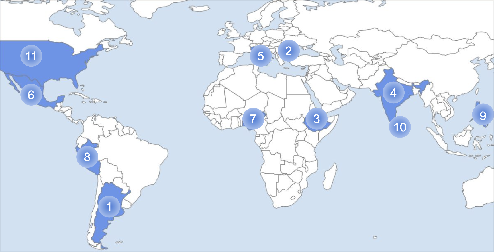
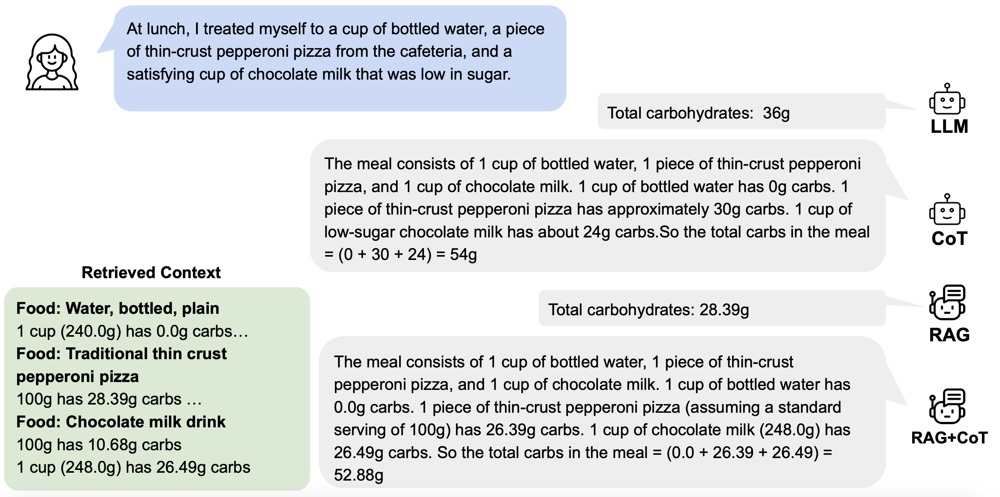
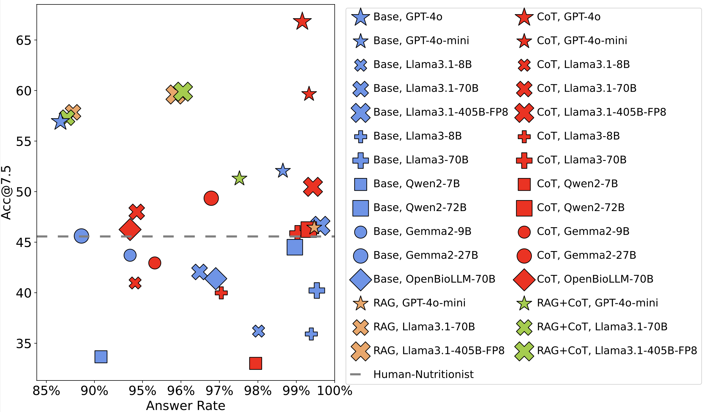
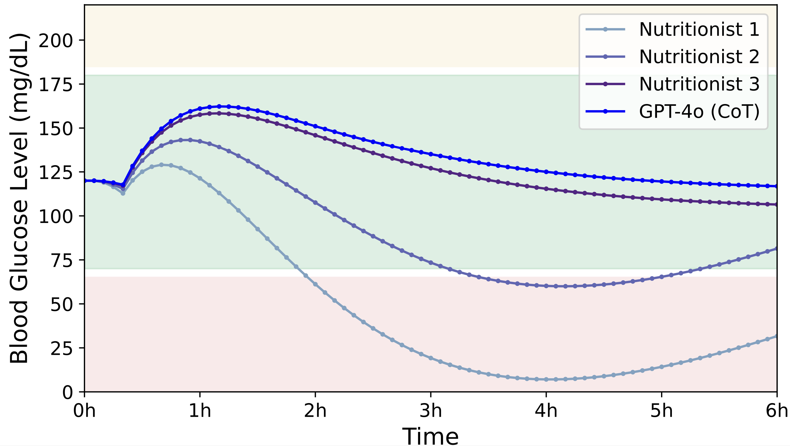

Text your meal description to +1 (866) 698-9328 or send a message via WhatsApp to +1 (555) 730-0221.
The dataset consists of 11,857 meal descriptions annotated with macro-nutrient labels, including carbohydrates, proteins, fats, and calories. NutriBench can be used to evaluate and benchmark Large Language Models (LLMs) on the task of nutrition estimation.
This video shows examples of NutriBench queries and responses by GPT-4o with Chain-of-Thought (CoT) prompting for carbohydrate estimation.
NutriBench is derived from the What We Eat in America (WWEIA) and FAO/WHO Gift databases to generate meal descriptions from dietary intake data of 11 countries, including Argentina, Bulgaria, Ethiopia, India, Italy, Mexico, Nigeria, Peru, Philippines, Sri Lanka, and the United States. After processing the meal data with nutrition labels, we instruct GPT-4o-mini to generate natural language meal descriptions to construct NutriBench. We also conduct human verification to ensure that the meal descriptions generated by the model do not contain hallucinations or missing information.

This image shows the countries from which dietary intake data was obtained to construct NutriBench. The labels correspons to (1) Argentina, (2) Bulgaria, (3) Ethiopia, (4) India, (5) Italy, (6) Mexico, (7) Nigeria, (8) Peru, (9) Philippines, (10) Sri Lanka, and (11) the United States
NutriBench is designed to capture real-world dietary intake and reporting. The dataset contains meal descriptions containing multiple dishes and ingredients from around the world. These descriptions are generated using both precise metric units (grams) and everyday natural measurements (e.g., '1 cup,' 'half a tablespoon'). This approach ensures the dataset reflects a wide range of dietary patterns and meal logging styles.
We evaluate 12 leading LLMs, including open-source models (Llama 3.1-8B/70B/405B, Llama 3-8B/70B, Gemma 2-9B/27B, and Qwen 2-7B/70B), closed-source models (GPT-4o and GPT-4o mini), and a medical domain-specific model (OpenBioLLM-70B), on the task of carbohydrate estimation from natural language meal descriptions. The evaluation spans four prompting strategies:

This image shows the output by GPT-4o for the four prompting strategies for a NutriBench query.
We conducted extensive experiments across the models and prompting methods to provide a
comprehensive insight into the current capabilities of LLMs in nutrition estimation. We also
conducted a study involving three professional nutritionists and found that LLMs can
provide more accurate and faster predictions over a range of complex queries.

This image summarizes the results of our experiments, plotting the accuracy (absolute error < 7g) and answer rate for all the methods on NutriBench.
We conducted a real-world risk assessment study demonstrating the impact of nutrition estimation by simulating the effect of meal carbohydrate predictions on the blood glucose levels of individuals with Type 1 diabetes (T1D). Across 44,800 simulations, we found that carbohydrate estimates by GPT-4o lead to the lowest blood glucose risk and highest time in the safe glucose range (70-180 mg/dl), surpassing the estimates made by nutritionists.

Simulated glucose traces for a virtual patient using a pump with carbohydrate estimates for a meal from GPT-4o and nutritionists. The safe glucose range (70-180 mg/dl) is in green, low (<70 mg/dl) in red, and high (>180 mg/dl) in yellow.
For any questions, please contact the authors at {dongx1997,mdhaliwal}@ucsb.edu